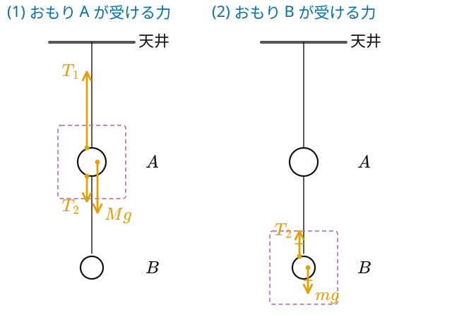
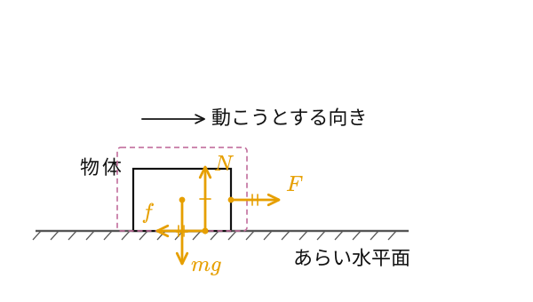
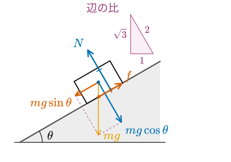
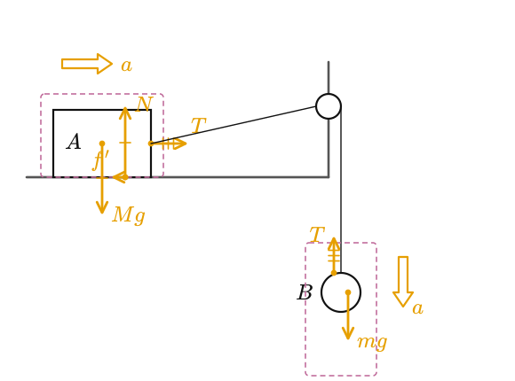
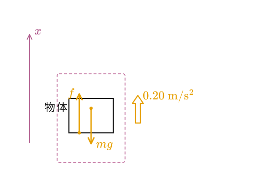

力の図示の見本
- 作用点は ● 。重力は重心、ほかは物体がふれている点(面・糸・ばね・手)から。
- 長さは力の大きさに比例。つりあう力は同じ長さで「=」の印。
- 加速度 ⇨ は物体ごと。運動の向きは細い黒矢印(力ではない)。
- 注目する物体は点線で囲む。触れていないものから受ける力は描かない。
1. つるしたおもり

重力は重心から。張力は糸との接点から(糸に沿って、糸の側へ)。注目する物体を点線で囲む。T₂ と mg は同じ長さ(つりあい)で「=」の印。
2. あらい水平面上の物体

重力は重心から。N と f は床との接触点から、F は手(糸)がふれている点から。N = mg、f = F はそれぞれ同じ長さで同じ印。摩擦力は、動こうとする向きと逆。
3. 斜面上で静止する物体

重力を点線の長方形で、斜面方向(朱)と垂直方向(青)に分ける。f は朱、N は青。成分と同じ長さの力に「=」の印。辺の比(1 : √3 : 2)の三角形を添える。
4. 連結した 2 物体

物体ごとに点線の枠、力、加速度 ⇨ を描く。T は同じ長さ・同じ印(軽い糸の張力はどこでも同じ)。B は下向きに加速するので、mg が T より長い。
5. 手で持ち上げる

上向きに加速するので、手の力 f は重力 mg より長い(つりあいではない)。加速度 ⇧ は力とは別に、横に描く。